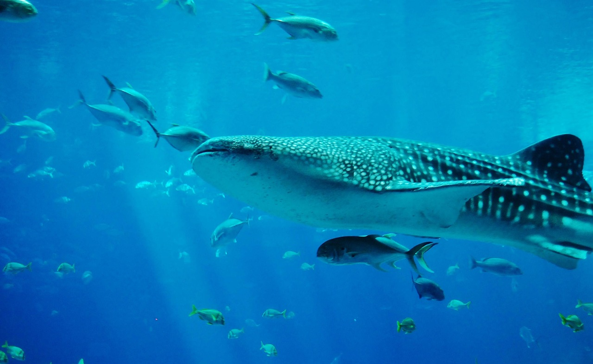
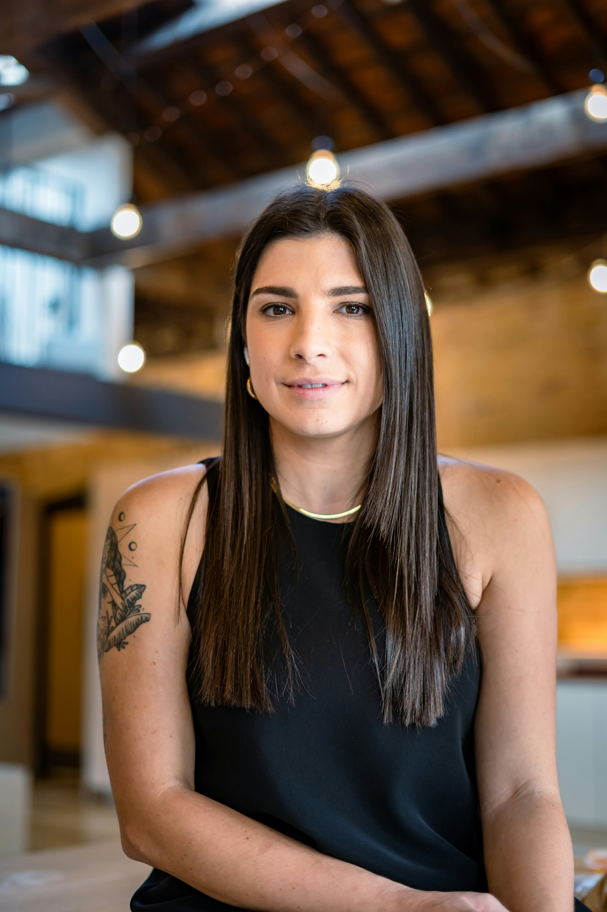
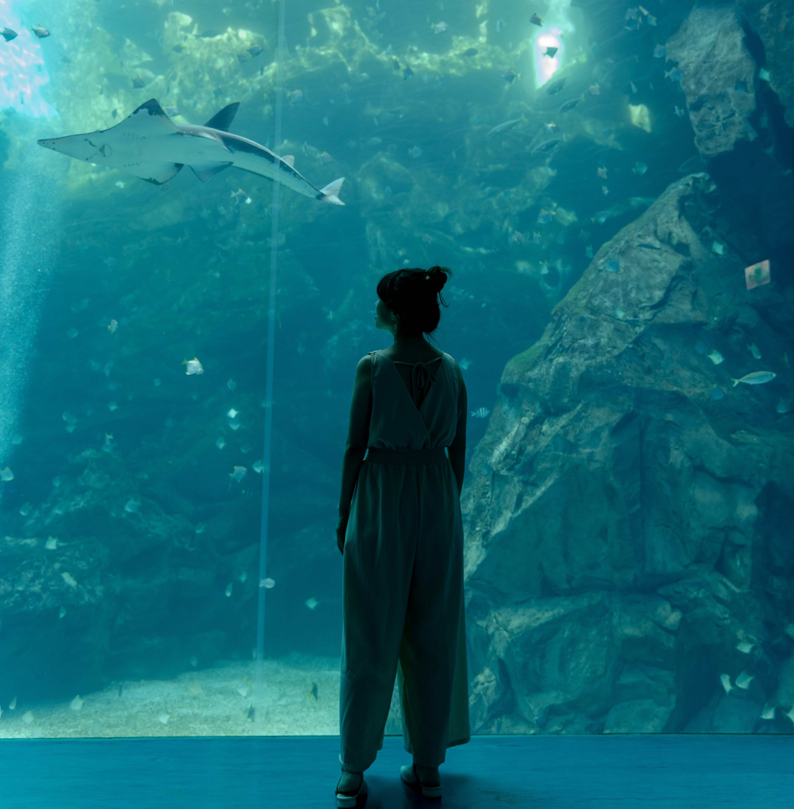

About Us
“Conservation is the preservation of life on earth, and that, above all else, is worth fighting for.”
-Rob Stewart
Our Mission
The Gentle Giants Project was created out of a fascination with the oceans and the creatures that call it home. Over the years, our team has grown and our focus has become protecting one of the ocean's largest species, the whale shark. Through research, education, and help from supporters across the world, we hope to one day bring these gentle giants out of the threat of extinction.
Our Impact
142 whale sharks tagged for tracking
73 dive surveys of habitats around the world
352 educational events hosted
Our Team

Alysa Grayson
Director
While studying for a bachelor's degree in marine biology and conservation, Alysa Grayson fell in love with whale sharks and became determined to help the species. After graduating, she started The Gentle Giants Project, and her goal has always been to protect whale sharks while also sharing her love and knowledge of these animals with others. Today, she functions as the director for the organization's research and education efforts.

Michael Warren
Lead Researcher
Warren began working at The Gentle Giants Project in its early days as a field researcher. His passion for ocean conservation led him to become the project's lead researcher, and today, he oversees the organization's various research efforts and data analysis.
Maria Douglas
Field Researcher
The newest member of The Gentle Giants Project, Maria Douglas, began as a research assistant while studying marine biology. Since graduating, she has continued to work with the organization as a field researcher participating in dive surveys and tracking tagged whale sharks.

Alice Scott
Event Coordinator
Alice Scott combines her love of marine conservation with her passion for teaching by working as the organization's event coordinator. She works together with the research department and oversees the educational events hosted by The Gentle Giants Project across various regions.
Your Part
You are an important part of our team at The Gentle Giants Project, and there are many ways you can help our efforts!
Learn More